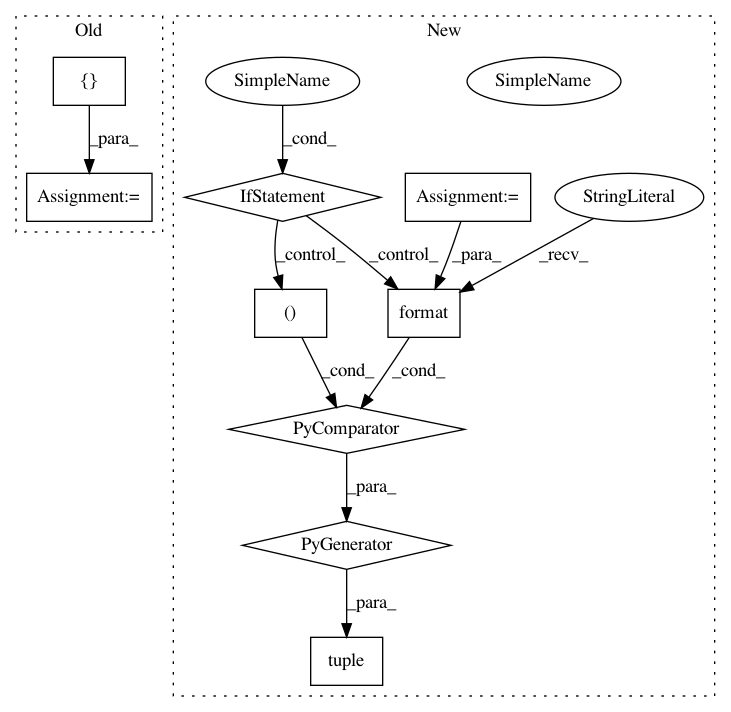

7856d22b09561e33522bdc0bd00218ae75b84bd7,softlearning/algorithms/sac.py,SAC,_init_critic_update,#SAC#,232
Before Change
self._td_loss2_t = tf.losses.mean_squared_error(
labels=q_target, predictions=self._qf2_t, weights=0.5)
qf1_train_op = tf.contrib.layers.optimize_loss(
self._td_loss1_t,
self.global_step,
learning_rate=self._qf_lr,
optimizer=tf.train.AdamOptimizer,
variables=self._qf1.get_params_internal(),
increment_global_step=False,
name="td_loss_1_optimizer",
summaries=([
"loss", "gradients", "gradient_norm", "global_gradient_norm"
] if self._tf_summaries else []))
qf2_train_op = tf.contrib.layers.optimize_loss(
self._td_loss2_t,
self.global_step,
After Change
labels=q_target, predictions=q_value, weights=0.5)
for q_value in q_values)
q_training_ops = tuple(
tf.contrib.layers.optimize_loss(
q_loss,
self.global_step,
learning_rate=self._qf_lr,
optimizer=tf.train.AdamOptimizer,
variables=self._q_functions[i].get_params_internal(),
increment_global_step=(i == 0),
name="q_loss_{}_optimizer".format(i),
summaries=((
"loss", "gradients", "gradient_norm", "global_gradient_norm"
) if self._tf_summaries else ()))
for i, q_loss in enumerate(q_losses))
self._training_ops.update({"qf": tf.group(q_training_ops)})
def _init_actor_update(self):
In pattern: SUPERPATTERN
Frequency: 3
Non-data size: 9
Instances
Project Name: rail-berkeley/softlearning
Commit Name: 7856d22b09561e33522bdc0bd00218ae75b84bd7
Time: 2018-09-09
Author: kristian.hartikainen@gmail.com
File Name: softlearning/algorithms/sac.py
Class Name: SAC
Method Name: _init_critic_update
Project Name: rail-berkeley/softlearning
Commit Name: 7856d22b09561e33522bdc0bd00218ae75b84bd7
Time: 2018-09-09
Author: kristian.hartikainen@gmail.com
File Name: examples/multigoal_sac.py
Class Name:
Method Name: run
Project Name: rail-berkeley/softlearning
Commit Name: 7856d22b09561e33522bdc0bd00218ae75b84bd7
Time: 2018-09-09
Author: kristian.hartikainen@gmail.com
File Name: examples/multigoal_ray.py
Class Name:
Method Name: run